고장사례 및 검색 › 기아 카니발
기아 카니발 엔진과 미션 사이 누유 — 발란스 캡 · 후크랭크 리데나 교환, 저압 연료호스 누유와 주행 중 떨림 점검
- 차량
- 기아 카니발 · 30,310 km
- 증상
- 엔진과 미션 사이에서 기름이 샌다고 하셨고, 주행 중 떨림도 함께 말씀하셨습니다. 주행거리는 30,310 km였습니다
- 원인
- 엔진과 미션이 맞붙은 자리는 밖에서 들여다볼 수가 없습니다. 아래로 떨어진 기름만 보고는 엔진 뒤쪽에서 나온 것인지 미션 앞쪽에서 나온 것인지 가릴 수 없습니다. 미션을 떼어내야 비로소 블록 뒷면이 드러나고, 그때 새는 자리가 보입니다.
멤버째 내리고 미션을 분리해 확인한 결과 새는 곳이 두 군데였습니다. 하나는 후크랭크 리데나(크랭크 리어 오일씰)이고, 다른 하나는 블록 뒷면의 발란스 캡이었습니다. 발란스 캡은 밸런스 샤프트가 들어가는 자리를 막아 두는 덮개인데, 떼어내 보니 세 개 모두 안쪽에 오일이 고여 있었습니다. 함께 교환했습니다.
주행거리가 30,310 km입니다. 적게 탄 차라고 해서 누유가 없는 것은 아닙니다. 씰과 덮개는 주행거리보다 열 이력과 압력, 고무의 경화에 더 영향을 받습니다. 그래서 새는 자리는 거리로 짐작하지 않고 뜯어서 확인합니다.
연료 쪽에서도 따로 한 군데가 나왔습니다. 저압 연료호스 연결부에 젖은 자국이 있어 호스를 교환했습니다. 주행 중 떨림은 누유와 별개였습니다. 점검해 보니 휠과 타이어 쪽 문제여서 그쪽으로 잡았습니다. 한 번 들어온 차에서 증상이 둘이면, 같은 원인으로 묶지 않고 따로 확인하는 편이 맞습니다. - 수리내역
- 누유 점검 — 엔진과 미션 사이 누유, 저압 연료호스 누유 확인 · 주행 중 떨림 점검 — 휠 · 타이어 문제로 확인 · 서브프레임(멤버) 탈부착 · 엔진 · 미션 탈부착 · 미션 분리 후 블록 뒷면 점검 · 발란스 캡 3개 교환 · 후크랭크 리데나 교환 · 저압 연료호스 교환 · 휠 · 타이어 교환 · 재조립 후 시동 · 누유 재점검
- 교환부품
- 발란스 캡 3개 · 후크랭크 리데나(크랭크 리어 오일씰) · 저압 연료호스 · 휠 · 타이어 · 엔진오일 · 각종 오링
정비 사진 14장
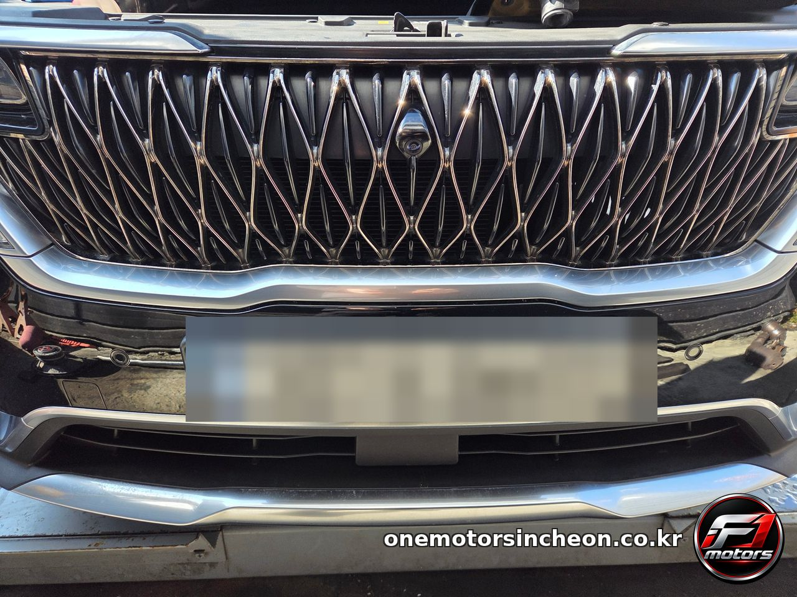
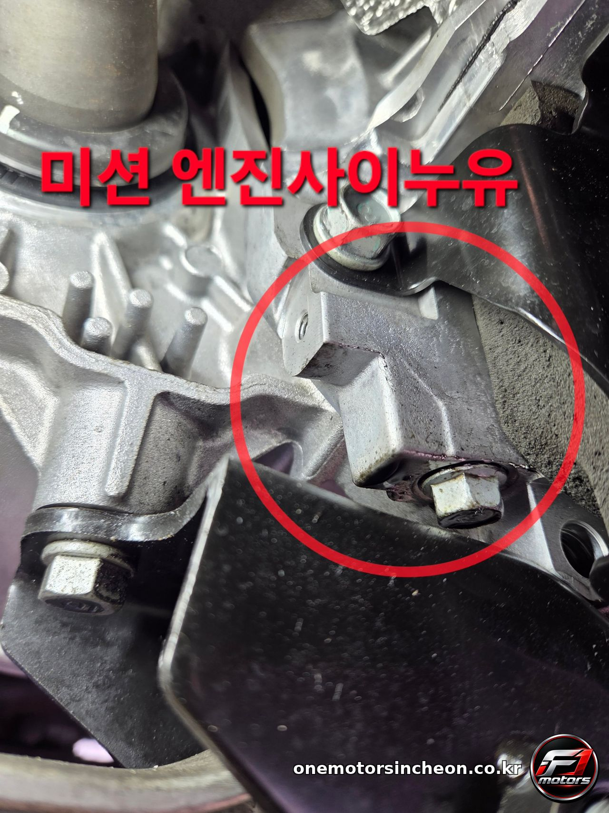
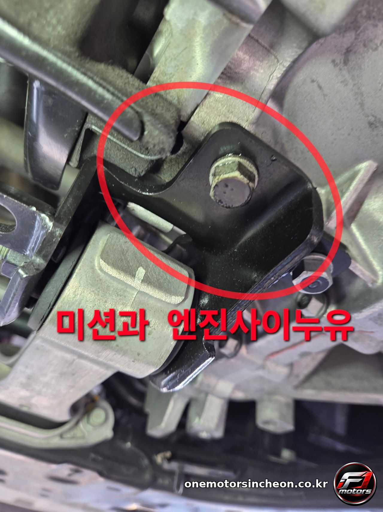
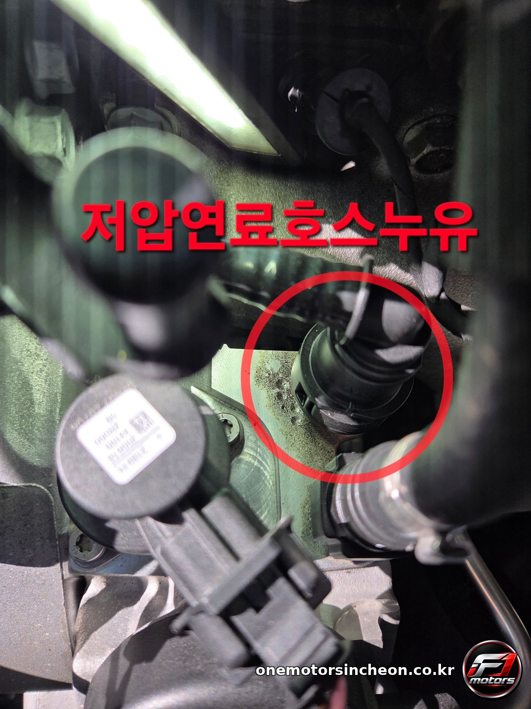
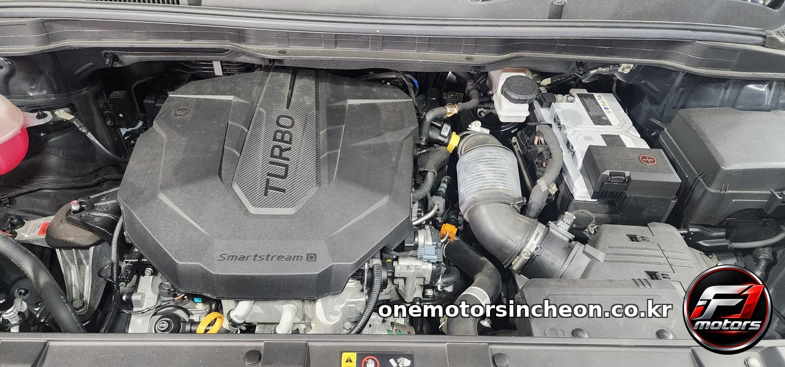
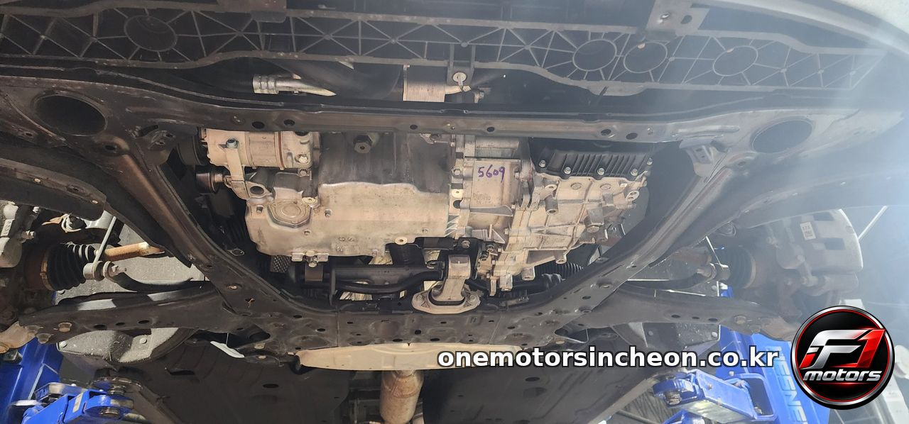
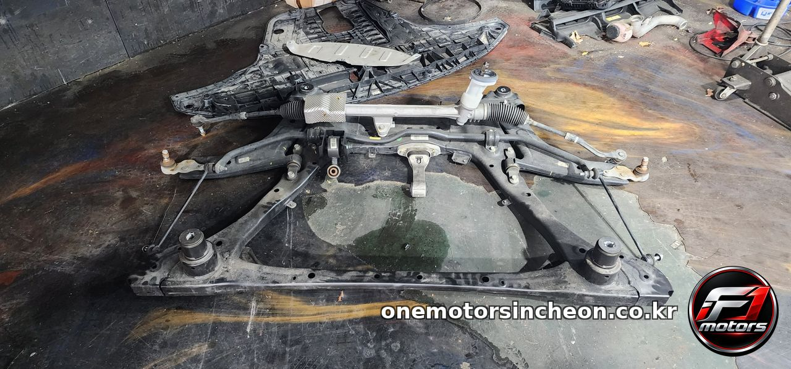
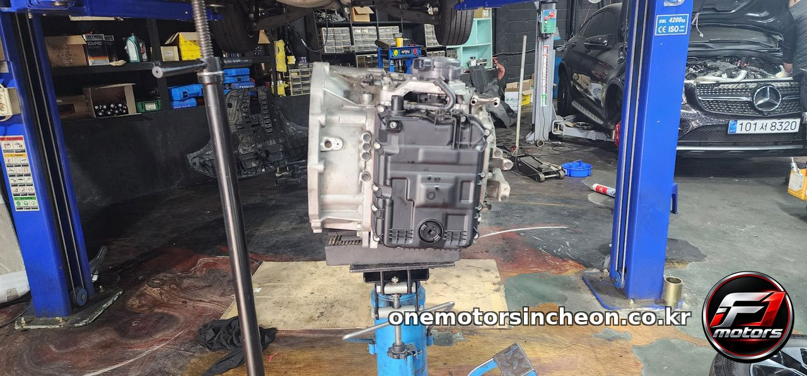
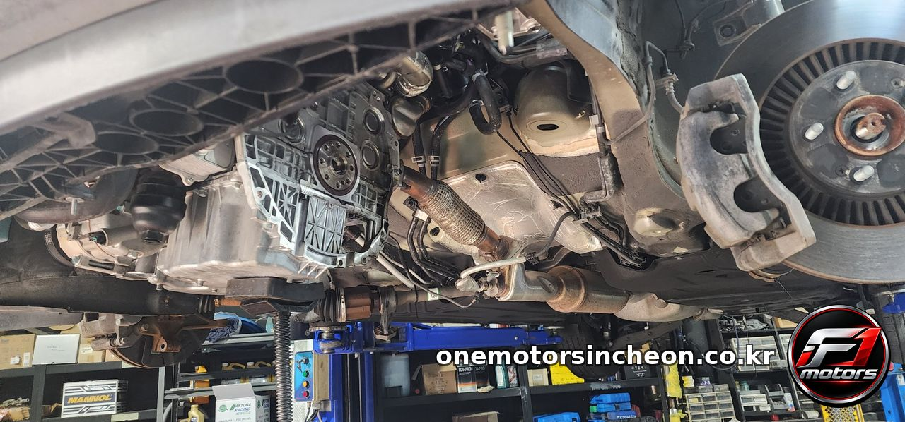
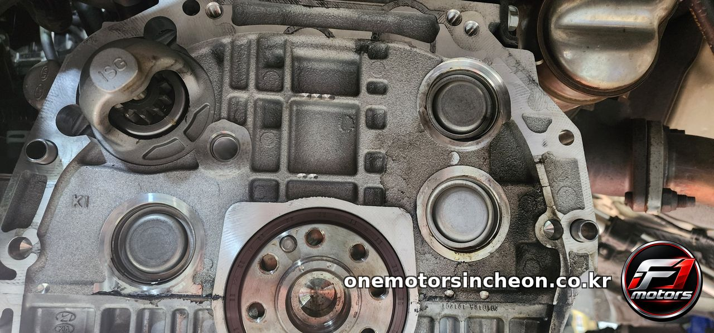
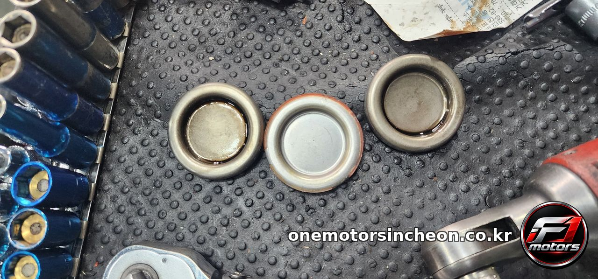
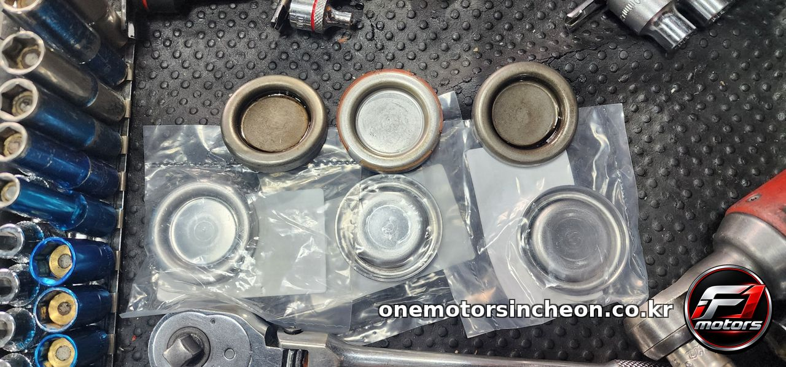
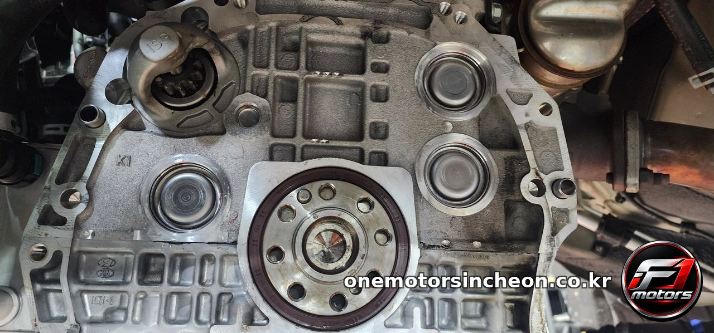
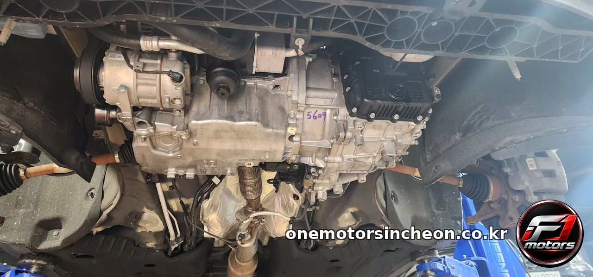
이런 증상으로 찾아오십니다
- 카니발 엔진과 미션 사이 누유
- 엔진 미션 사이에서 기름이 새요
- 카니발 미션 누유
- 카니발 디젤 누유
- 발란스 캡 누유
- 발란스 캡 교환
- 밸런스 샤프트 캡 누유
- 블록 뒷면 플러그 누유
- 후크랭크 리데나 교환
- 크랭크 리어 오일씰 누유
- 저압 연료호스 누유
- 연료 호스 젖어 있어요
- 경유 냄새가 나요
- 주행 중 떨림 원인
- 속도 올리면 핸들이 떨려요
- 휠 타이어 떨림 점검
- 3만km인데 엔진오일이 새요
- 적게 탄 차도 누유가 생기나요
- 미션 안 내리고 누유 잡을 수 있나요
- 새는 자리를 어떻게 찾나요
- 카니발 미션 탈거
- 스마트스트림 디젤 누유
- 카니발 디젤 정비
- 인천 카니발 미션 누유
- 인천 기아 정비
- 인천 디젤 누유 수리
- 인천 승합차 누유
- 제물포구 자동차정비
- 인천 송림동 정비소
- F1모터스
- 인천에프원모터스
비슷한 증상이 있으시면 전화로 상담해 주세요. 차종과 연식, 증상만 알려주시면 예상 원인을 안내해 드립니다.
인천에프원모터스는 제조사 공식 서비스센터가 아닌 독립 정비업체입니다. 정비 내용은 차량 상태에 따라 달라질 수 있습니다.